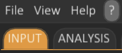
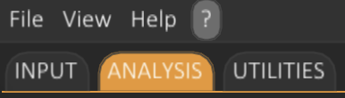
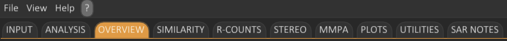

Graphical User Interface (GUI) Overview
This chapter provides a comprehensive overview of the SARgate graphical user interface (GUI).
- Tab Structure
- Menu Bar
- Slith Minigame
Tab Structure
The SARgate graphical user interface is organised around a tab-based layout. Each tab corresponds to a specific type of task or analysis, allowing a clear separation between data preparation, analysis execution, and result exploration.
Initial Tabs
When SARgate is launched, only two tabs are visible:

Input Tab
The Input tab represents the starting point of any SARgate analysis.
From this tab, the user:
- Selects the input molecular library to analyse.
- Configures all analysis parameters.
- Defines the output file name and destination.
- Launches the analysis workflow.
Once the analysis is started, SARgate processes the input library according to the selected options.
Utilities Tab
The Utilities tab provides a collection of standalone tools designed to assist with the preparation and manipulation of input files. These tools are independent from the main SARgate analysis workflow and can be used on their own.
Typical utilities include, for example:
- File format conversion (e.g. CSV <-> SDF).
- Simple data inspection or preprocessing tasks.
Using the Utilities tab is not required to run an analysis on a molecular library, and none of the tools in this tab are intrinsically linked to a specific SARgate project.
Analysis Tab
After the analysis has been launched, a new tab called Analysis appears automatically.

This tab displays:
- The progress of the running analysis.
- Intermediate statistics and counters.
- Informative messages related to the current processing step.
The Analysis tab is primarily intended for monitoring the execution and verifying that the workflow is proceeding correctly.
Result Tabs
Once the analysis is completed, seven additional tabs become available.

Each of these tabs focuses on a different aspect of result exploration and interpretation.
Overview Tab
The Overview tab allows the user to explore the subsets generated from the original library, the molecules belonging to each subset, and the associated R-groups for each molecule.
Both numerical summaries and graphical representations are provided to describe the distribution of R-groups across subsets.
Similarity Tab
The Similarity tab enables the construction of similarity matrices to explore molecular similarity within each subset.
Two different similarity matrix types can be generated, allowing complementary views of structural relationships between molecules.
R-counts Tab
The R-counts tab provides a detailed analysis of R-group distributions.
- Frequency statistics for each R-group.
- Associated biological activity values.
- An interactive table.
- An interactive boxplot for visual comparison.
This tab is designed for in-depth Structure–Activity Relationship (SAR) inspection at the R-group level.
Stereo Tab
The Stereo tab focuses on stereochemistry.
It allows the user to visualise groups of stereoisomers, either across the entire dataset or within individual subsets.
This provides rapid insight into activity differences that can be attributed specifically to stereochemical variations.
MMPA Tab
The MMPA tab performs Matched Molecular Pairs Analysis.
This analysis identifies pairs or groups of molecules that differ by a single R-group substitution and exhibit a significant change in biological activity as a result of that single modification.
MMPA is a powerful tool for pinpointing chemically meaningful transformations driving activity changes.
Plots Tab
The Plots tab allows the generation of several types of graphical representations, including:
- R-group matrices (R-groups table).
- Scatter plots (2D and 3D).
- Principal Component Analysis (PCA) plots (2D and 3D).
- Structure–Activity Landscape (SAL) plots.
These visual tools support both qualitative and quantitative interpretation of the analysed chemical space.
SAR Notes Tab
The SAR Notes tab opens a dedicated window that displays the common substructure identified for each subset, together with the corresponding R-groups.
Within this interface, the user can add textual annotations for each R-group independently, in order to record observations related to structure–activity relationships (SAR) identified during the different analyses performed in SARgate.
All annotations are saved automatically. When a previously generated job is loaded, the corresponding SAR Notes are restored and displayed, ensuring continuity between analysis sessions.
Menu Bar
The SARgate menu bar provides access to core application-level actions, including path configuration, job loading, interface customisation, and documentation utilities. It includes four main entries: File, View, Help, and the contextual ? button.
File
-
Set input directory
Sets the default folder used as the starting location for the input library file dialog. This directory acts as a convenience “entry point” only: the user can still browse and select files located outside the chosen input folder. -
Set results directory
Sets the root directory used to store SARgate job outputs. For each executed job, SARgate creates a dedicated subfolder within this path, named either after the input file or according to the job name provided in the Input tab. The job folder contains: log files required to reproduce and audit the analysis, images generated during execution, and the internal files required to reload the job state in a future session. -
Load job
Opens a file dialog within the configured results directory, allowing the user to select a previously generated job folder and restore its analysis session. -
Quit SARgate
Terminates the application and closes the current SARgate session.
View
-
Style editor
Opens the interface appearance manager, enabling advanced GUI customisation. From this panel, the user can:- Set the global application font.
- Adjust the global font scale (GUI scaling).
- Select a predefined theme (Dark or Light).
- Create and apply a Custom theme.
- Select a plot colormap for data visualisation (TrafficLight, Viridis, Plasma, Cool, or Jet).
-
Fullscreen mode
Switches the main window to fullscreen display mode.
Help
-
User Manual
Opens this user manual at the main landing page. -
Documentation
Opens the online SARgate documentation (for example, the project repository page). -
Support
Opens a contextual submenu with the following options:-
Contact
Displays the reference email address for communications and support requests. -
Report an issue
Opens the project’s issue tracker page to report bugs, inconsistencies, or other problems. SARgate is an open-source toolkit developed by a small research group; user reports are valuable for improving robustness and feature completeness.
-
Contact
-
About SARgate
Displays application metadata, including the currently installed version and licensing information for third-party dependencies.
Contextual Help Button
The ? button provides contextual help: it opens this manual directly at the chapter corresponding to the tab currently active in the SARgate GUI.
Slith Minigame
SARgate includes a chemistry-themed mini-game called Slith, inspired by the classic Snake gameplay.
The mini-game is launched via a hidden tab shortcut:
- Windows / Linux: Press
Ctrl+Shift(⇧) +Ssimultaneously. - macOS: Press
Command(⌘) +Shift(⇧) +Ssimultaneously.
Once activated, a new tab labelled Slith appears in the main interface and loads the game environment.
Game Concept
The player controls a growing fatty acid chain using
Left Arrow (←) and Right Arrow (→),
starting as butanoic acid (C4).
The chain moves along a hexagonal reaction board, representing a simplified model of fatty-acid biosynthesis.
The goal is to elongate the molecule as much as possible by reaching malonyl-CoA units.
Each malonyl-CoA capture extends the chain by 2 carbon atoms, mimicking the two-carbon iterative growth step of fatty-acid synthesis. Chain speed increases progressively after each elongation step.
The game terminates when the fatty acid chain collides with itself (self-intersection). At that point, the longest synthesised chain is reported as the final result.